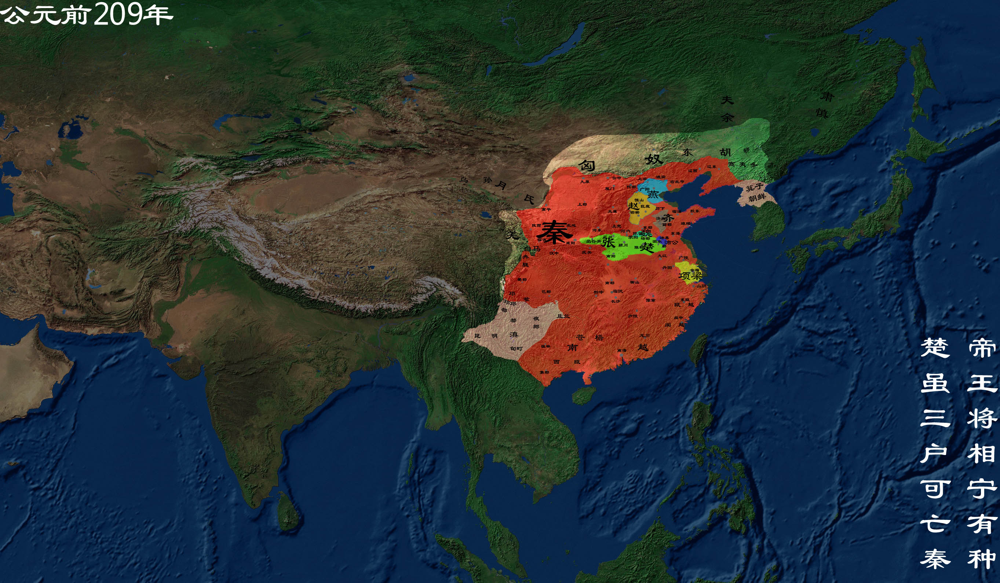

秦朝
秦朝（公元前221年－公元前207年），是中国历史上一个极为重要的朝代，秦始皇嬴政从公元前230年到前221年先后攻灭关东六国，完成国家统一，后北击匈奴，南并百越，建立中国空前统一的大帝国。 公元前206年，秦王子婴向刘邦投降，秦朝灭亡，国祚共十五年。
【相关人物】
[秦始皇]
[李斯]
[韩非子]
.......
[更多人物]
【相关书籍】
[秦汉史话]
[大秦帝国]
.......
[更多书籍]

公元前221年，秦始皇建秦朝
秦始皇。嬴政，秦庄襄王之子。自公元前230年至前221年，先后灭韩、赵、魏、楚、燕、齐六国， 完成了统一中国的大业，建立起第一个以早期汉族为主体的强大秦汉多民族统一的大帝国——秦朝。 定都咸阳。并创立了一套专制主义的中央集权制度。
公元221年 统一度量衡
商鞅变法前，秦国各地度量衡不统一。为了保证国家的赋税收入，商鞅制造了标准的度量衡器，如今传世之“商鞅量”，上有铭文记有秦孝公监造。
公元214年 筑长城
长城修筑的历史可上溯到西周时期，发生在首都镐京（今陕西西安）的著名的典故“烽火戏诸侯”就源于此。 春秋战国时期列国争霸，互相防守，长城修筑进入第一个高潮，但此时修筑的长度都比较短。秦灭六国统一天下后， 秦始皇连接和修缮战国长城，始有万里长城之称。明朝是最后一个大修长城的朝代， 今天人们所看到的长城多是此时修筑。
公元249年 司马懿政变
曹操封魏王后，以司马懿为太子中庶子以佐助曹丕。曹丕临终时，令司马懿与曹真等为辅政大臣， 辅佐魏明帝曹叡。明帝时，司马懿屡迁抚军大将军、大将军、太尉等重职。明帝崩，托孤幼帝曹芳以司马懿和曹爽。 曹芳继位后，司马懿先是遭到曹爽排挤，迁官为无实权的太傅。正始十年（公元249年）， 司马懿趁曹爽陪曹芳离洛阳至高平陵扫墓，起兵政变并控制京都。自此曹魏军权政权落入司马氏手中， 史称高平陵事件。
公元前213年 焚书坑儒
焚书坑儒，又称“焚诗书，坑术士（一说述士，即儒生）”，西汉之后称“焚书坑儒”。 秦始皇在公元前213年和公元前212年焚毁书籍、坑杀“犯禁者四百六十余人”。
公元前210年 秦始皇驾崩
秦始皇最后一次出巡时，在半路得了病。他忌讳“死”字，群臣谁也不敢说死的事。当走到沙丘平台时， 秦始皇觉得自己不行了，便遗诏给公子扶苏说：“我死后你要回到咸阳（秦首都）参加治理我的丧事。 ”当时遗诏在赵高之处，没有公开，秦始皇死后，李斯和赵高怕扶苏回来继承帝位，便毁掉秦始皇遗诏， 又伪造了一分假遗诏，让胡亥即位。由于秦始皇死在半路，李斯怕公子知道秦始皇已死，天下有变， 便将消息隐瞒，秘不发丧，下令兼程回咸阳，并将秦始皇的尸体置于车中。
公元前209年 揭竿起义
吴广(?-公元前208年)，字叔，阳夏(今河南太康)人 ，秦末农民起义领袖。秦二世元年(公元前209年)七月，朝廷征发闾左屯戍渔阳，陈胜、吴广为屯长。他们行至大泽乡(今安徽宿县东南)，为大雨所阻，不能按期到达。 按照秦法，过期要杀头。陈胜、吴广便发动戍卒起义，提出“大楚兴，陈胜王”的口号。陈胜自立为将军，以吴广为都尉，用已被赐死的秦始皇长子扶苏和楚将项燕的名义号召群众反秦。 次年，围攻荥阳的假王吴广也与义军将领田臧意见不合，田臧竟假藉陈胜的命令杀死吴广。
公元前207年 巨鹿之战
巨鹿之战，是秦末大起义中，项羽率领数万楚军（后期各诸侯义军也参战），同秦名将章邯、王离所率四十万秦军主力在巨鹿 （今河北平乡）进行的一场重大决战性战役，也是中国历史上著名的以少胜多的战役之一。 项羽破釜沉舟，以大无畏精神在各诸侯军畏缩不进时率先猛攻秦军，带动诸侯义军一起最终全歼王离军， 并于八个月后迫使另二十万章邯秦军投降。从此项羽确立了在各路义军中的领导地位。经此一战，秦朝主力尽丧，名存实亡。T
公元前202年 项羽乌江自刎
《项羽之死》节选自《史记项羽本纪》，本篇记叙的是项羽一生的最后阶段，由垓下被围，到乌江自刎， 也是《项羽本纪》中最具悲剧性的一幕。
公元前202年 西汉建立
西汉（公元前202年—公元8年）是中国历史上的大一统王朝，共历十二帝，享国二百一十年，又称为前汉。 秦末天下揭竿而起，经过楚汉之争，刘邦击败项羽，公元前202年刘邦在山东定陶称帝，国号汉，暂都洛阳，三个月后定都长安。 西汉诸多制度上承袭秦制，汉初实行轻徭薄赋、休养生息的国策，社会经济迅速恢复。